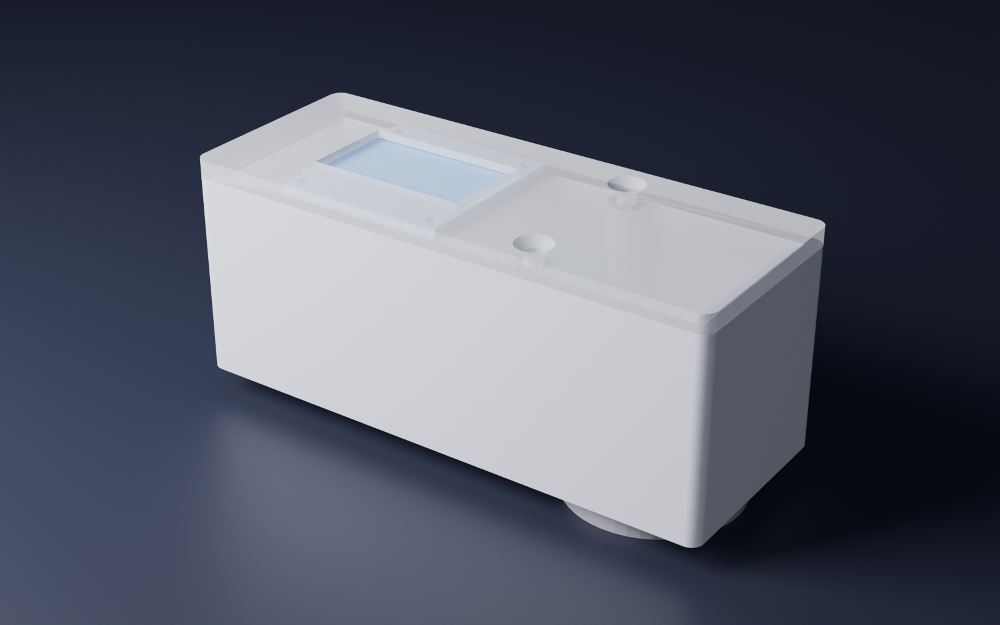

1. Ringkasan
Usulan: desain D, "BeefFresh Genggam". Kotak kecil dari lembaran PVC (110 x 72 x 48 mm) dengan kepala ukur dari tutup cat semprot di bawahnya. Cara pakai: taruh daging di meja, letakkan alat di atasnya, baca hasil di layar. Sensor menghadap ke bawah ke ruang gelap, jaraknya ke daging selalu 15,5 mm, LED menyinari dari samping, dan tidak ada akrilik.
Urutan kerja yang tidak membuang tenaga: kepala ukur (tutup cat, sensor, LED, sekat) dibuat sekali sebagai satu modul. Modul itu diuji dulu di dalam kotak lama (desain C). Kalau lulus uji, modul yang sama dipindah ke kotak genggam (desain D). Tidak ada bagian yang dibuang.
Data_Latih_Uji.ino: SDA 26, SCL 27, LED 25. Alat hanya bekerja bila keduanya sama. Kabari Lyra mana yang sebenarnya tersolder di alatmu, supaya firmware atau gambarnya disamakan.2. Empat desain
Rumah cetak 3D dengan tabung gelap

- Kecil (88 x 34 x 36 mm) dan ringan
- Tabung gelap memberi jarak tetap 5, 8, atau 11 mm
- Butuh printer 3D
- Memakai LED papan sensor yang hanya 3,2 mm dari chip: pantulan dari daging basah kembali lurus ke chip
Kotak PVC besar, daging di atas akrilik
- Sudah ada dan sudah dipakai
- Ruang tertutup, pintu bisa dikunci
- Akrilik menyebarkan cahaya LED: kertas bening terbaca sama terang dengan daging (data 61 sampai 66)
- Besar, sulit dibawa
- Jarak daging ke sensor tidak tetap
Tutup cat semprot di atas sensor
- Memakai kotak yang ada, bahan murah
- Tanpa akrilik, jarak tetap, LED miring
- Tetap besar dan berat
- Daging harus dimasukkan ke dalam kotak
Rancangan rinci: kotak_lama/rancangan.html
BeefFresh Genggam dari PVC
- Kepala ukur yang sama dengan C
- Seukuran dompet tebal, ditempel ke daging di meja
- Lembaran PVC, tutup cat, kabel dupont, sedikit solder
- Cahaya ruangan bisa masuk lewat tepi daging bila daging kecil atau tidak rata (diatasi di firmware, lihat bagian 8)
Buka model 3D interaktif desain A
3. Perbandingan
Skala 1 (buruk) sampai 5 (baik). Nilai B untuk akrilik berasal dari data ukur nyata. Nilai lain adalah perkiraan dari rancangan dan belum diuji.
4. LED: lampu papan sensor atau LED 5 mm?
LED papan sensor (yang tampak kuning)
Menurut berkas desain Adafruit, LED papan adalah LED putih kecil (Everlight seri 45-21). LED putih memakai lapisan fosfor kuning, jadi saat mati ia tampak kuning atau jingga. Warnanya saat menyala tetap putih. Jadi warna kuning yang terlihat kemungkinan besar bukan masalah (keyakinan sekitar 80%, karena modul tiruan bisa memakai LED lain).
Kelebihannya: arusnya diatur transistor dari VIN, jadi terangnya stabil. Kekurangannya: letaknya 3,2 mm dari chip. Pada jarak 8 sampai 15 mm, pantulan cermin dari permukaan daging yang basah jatuh hampir lurus kembali ke chip. Itu menambah warna putih ke semua kanal.
LED 5 mm eksternal (rangkaianmu sekarang)
Bisa diletakkan 14 mm dari chip dan dimiringkan 57 derajat, jadi pantulan cermin jatuh ke sisi lain. Ini pilihan yang lebih baik untuk daging basah.
Tetapi cara menyalakannya perlu diperbaiki. GPIO 3,3 V lewat resistor 220 ohm ke LED putih (tegangan maju sekitar 2,8 sampai 3,1 V) hanya memberi arus sekitar 1 sampai 2 mA. Arus sekecil itu peka terhadap suhu LED: perubahan tegangan maju 0,08 V bisa mengubah terang sekitar 15 sampai 20%. Usulan: transistor NPN (BC547, S8050, atau 2N2222) dari 5 V lewat resistor 100 ohm, arus sekitar 18 mA. Kepekaannya turun ke sekitar 4%. Angka ini hitungan perkiraan, belum diukur.
5. Desain D: potongan samping
6. Desain D: tata letak lantai
Dilihat dari atas, dari dalam kotak. Garis putus-putus ada di bawah lantai (di dalam tutup cat). Bor semua lubang dari sisi atas lantai. Tandai lubang sekrup sensor dengan menempelkan papan sensormu sendiri, karena modul tiruan bisa sedikit berbeda.
7. Bahan, potongan, dan kabel
Daftar potongan lembaran PVC
Dihitung untuk lembaran PVC tebal 3 mm. Kalau tebalmu lain, kabari Lyra. Total sekitar 20 x 25 cm lembaran.
Bahan lain
- Komponen yang sudah ada: ESP32 DevKit, TCS34725, OLED SSD1306, LED putih 5 mm
- Tutup cat semprot Ø 65 mm (sudah ada)
- Transistor NPN (BC547 atau S8050) dan resistor 100 ohm dan 1 kilo ohm
- Kabel dupont betina-betina 10 cm, sekitar 12 buah
- 2 sekrup M2,5 x 8 mm dengan mur (sensor), 2 sekrup M2 x 6 mm (OLED)
- Lem PVC atau lem tembak, silikon hitam, selotip hitam
- Cat semprot hitam doff (untuk bagian dalam tutup cat)
- Busa dobel tape 3 mm (alas ESP32)
- Kertas HVS putih doff dan kertas hitam doff atau kain beludru hitam (tatakan kalibrasi)
Sambungan kabel (mengikuti gambar rangkaianmu)
Kabel dupont dipasang langsung dari pin ESP32 ke pin sensor dan OLED, tanpa breadboard dan tanpa solder. Solder hanya diperlukan untuk LED, resistor, dan transistor.
8. Langkah merakit desain D
9. Cara memakai
- Kalibrasi sekali per sesi. Letakkan alat di tatakan putih, tekan Kalibrasi di aplikasi. Lalu letakkan di tatakan hitam dan simpan sebagai titik gelap.
- Taruh daging di meja, sisi yang rata menghadap ke atas, lebar minimal 3 cm dan tebal minimal 8 mm.
- Letakkan alat di atas daging tanpa menekan. Berat alat sendiri memberi tekanan yang sama setiap kali. Tanda segitiga di tepi tutup cat menunjukkan pusat lubang ukur.
- Tekan Ambil di aplikasi atau tombol di alat. Hasil muncul di layar alat dan di komputer. Lap muka tutup cat dengan tisu alkohol sebelum sampel berikutnya.
10. Perubahan firmware yang diperlukan
- Pin disamakan dengan kabel yang sebenarnya (lihat peringatan di bagian 1).
- Pengurangan cahaya ruangan: setiap pengukuran dibaca dua kali, LED menyala lalu LED mati. Hasil = bacaan menyala dikurangi bacaan mati. Cahaya ruangan yang masuk lewat tepi daging ikut terbuang. Ini perubahan paling penting untuk alat genggam.
- Kalibrasi dua titik: nilai = (mentah dikurangi hitam) dibagi (putih dikurangi hitam), dikali 255.
- Pemanasan LED: LED dinyalakan 2 sampai 3 detik sebelum dibaca supaya terangnya stabil.
- Perintah RAW dan LED (sudah ada di repo, belum diunggah ke alatmu) untuk diagnosis.
11. Uji penerimaan
| Uji | Cara | Lulus bila |
|---|---|---|
| Hitam | Alat di tatakan hitam, 3 kali | R, G, B masing-masing 10 atau kurang |
| Cahaya ruangan | Daging yang sama, lampu ruangan menyala lalu mati | Selisih R per G 0,02 atau kurang |
| Ulangan | Angkat dan letakkan lagi di titik yang sama, 5 kali | Simpangan R per G 0,03 atau kurang |
| Warna daging | Irisan daging segar tebal 8 mm atau lebih | R per G 1,4 atau lebih (alat lama: 1,1) |
| Kestabilan LED | Tatakan putih, ukur setiap menit selama 15 menit | Perubahan 2% atau kurang |
12. Yang belum diketahui
- Ukuran dalam kotak lama, tebal lembaran PVC, dan diameter dalam tutup cat yang sebenarnya (dipakai 62 mm dari ukuran luar 65 mm).
- Apakah header 7 pin sensormu tersolder dengan pin menghadap ke belakang papan. Desain D membutuhkannya supaya pin menembus celah di lantai. Kalau pin menghadap depan, pakai kabel dupont bengkok atau solder ulang header.
- Seberapa banyak daging menonjol masuk ke lubang 14 mm karena berat alat. Kalau terlalu banyak, jarak berubah. Uji ulangan di bagian 11 akan menunjukkannya.
- Daging menyentuh plastik tutup cat yang bukan bahan pangan. Sampel ukur jangan dimakan.
- Hitungan arus LED memakai tegangan maju LED putih umum. LED-mu bisa berbeda.